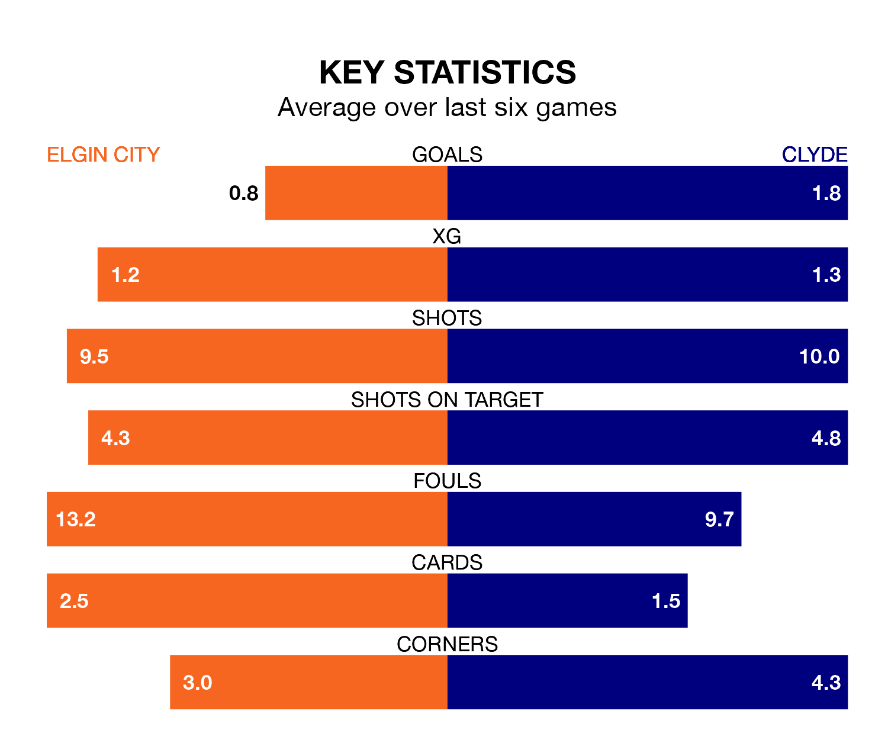

Tuesday's late match at Borough Briggs sees the league's two bottom sides face each other, as Elgin City host rock-bottom Clyde.
Elgin have picked up 18 points from their first 18 League Two games, with five wins and three draws.
That is four points more than the Bully Wee have collected, having won two and drawn eight.
In the last 10 years, Elgin and Clyde have played each other on 23 occasions. Elgin won nine of them, Clyde 12, and they drew twice.
On average, the Black & Whites scored 1.3 goals and the Bully Wee 1.7 in those matches.
Their last meeting was on September 23, when Clyde won 2-1 at home.
In Tom McHale, Elgin can rely on one of the league's safest pair of hands. He has kept four clean sheets in his 19 appearances this season in League Two.
In Clyde's net, Jack Leighfield has one clean sheet in 18 games. He has conceded a goal every 48 minutes, 20% more often than the 57 minutes between goals for McHale.
City are in disappointing form in League Two, with two wins and four losses from their last six games.
With a win and three draws over that period, the Bully Wee's form is similar – they have both taken six points from 18.
With 16 goals in 20 games so far this season, the Black & Whites are the league's lowest scorers with 0.8 goals per game. And they are conceding more than average, letting in 37 goals at a rate of 1.9 per game.
The visitors are also below average scorers, with 1.1 goals per game, compared to a league average of 1.4. They have conceded 2.0 goals per game.
Elgin's last match was on Saturday, a 1-0 loss against Dumbarton.
Clyde drew 1-1 with Spartans last time out, also on Saturday, with Jordan Allan on the scoresheet.
Updated: 13:20 (UTC), 29/01/24